朝ごはん
このセクションでは、ベルギーでよく食べていた朝ごはんを紹介します。
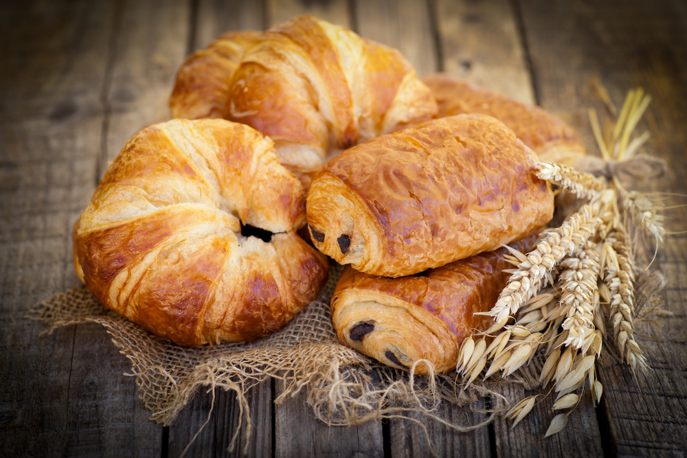
ベルギーでは、日曜日の朝にパン・オ・ショコラやクロワッサンを食べるのが定番です。
外はサクサク、中はふんわりしていて、とても美味しいです。
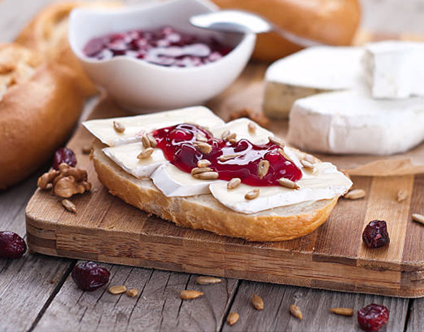
それほど一般的ではありませんが、ベルギーの田舎ではよく食べられていると思います。都市部ではこの習慣はあまり見られなくなったかもしれません。
でも、私の家では毎朝ジャムとチーズをのせたサンドイッチを食べていました。
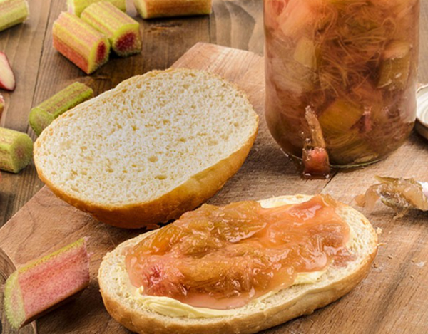
季節になると、母が庭のルバーブを切ってコンポートにしてくれました。朝にパンにのせて食べたり、おやつとして4時に食べたりしていました。
ルバーブはベルギーではけっこう一般的だと思います。スーパーでもルバーブのジャムがよく売られているし、ルバーブのタルトも有名です。
これもよく食べていた朝ごはんの一つです。
▲ MENUへ戻る
昼ごはん
このパートでは、ベルギーの代表的な料理を紹介します。
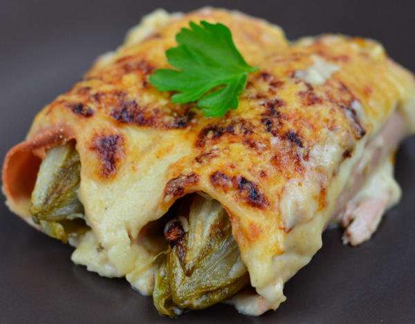
これはベルギーの料理で、子どもの頃はあまり好きではありませんでした。シコン（アンディーブ）の苦味が少し苦手だったのです。
でも大人になるとその苦味が気にならなくなり、今では美味しいと思えるようになりました。
材料にはシコンのほかに、ベシャメルソース、チーズ、そしてハムが使われています。
シコンのグラタンの歴史
シコンのグラタン（フランス語では「シコン・オ・グラタン」）は、ベルギーの伝統的な家庭料理の一つです。特に冬の寒い時期によく食べられます。
シコン（日本では「アンディーブ」とも呼ばれます）は、19世紀にベルギーで偶然発見された野菜です。ある農民がチコリの根を保存していたところ、暗くて寒い場所で白くて柔らかい葉が育ち、それが現在のシコンになったと言われています。
このシコンをハムで巻き、ベシャメルソース（ホワイトソース）とチーズをかけてオーブンで焼いたのが「シコン・オ・グラタン」です。もともとは家庭の素朴な料理でしたが、今ではベルギーを代表する伝統料理の一つとして知られています。
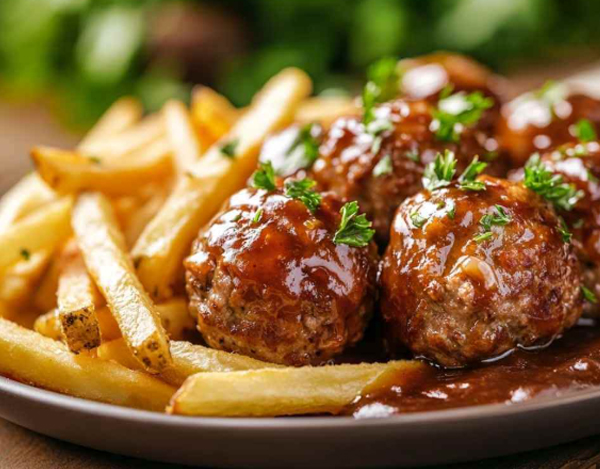
これはベルギーの都市リエージュで生まれたソースを使ったミートボール料理です。
付け合わせはフライドポテトですが、ベルギーではフライドポテトはとても象徴的な存在です。
ベルギーの食文化を語るうえで欠かせないものです。
リエージュ風ミートボールの歴史
リエージュ風ミートボール（フランス語では「ブーレット・ア・ラ・リエージョワーズ」）は、ベルギー東部の都市リエージュ発祥の伝統料理です。
この料理は、大きめのミートボールを甘酸っぱいソースで煮込んだもので、ソースにはビール、玉ねぎ、ヴィネガー、シロップ・ド・リエージュ（果物から作られた濃厚なシロップ）が使われます。シロップ・ド・リエージュは、リンゴやナシなどの果物を長時間煮詰めて作る、リエージュ地方特有の保存食です。
ブーレットはもともと、家庭で簡単に作れるボリュームのある料理として親しまれてきました。シロップの自然な甘みとお酢の酸味が合わさった独特の味わいが特徴です。
今日では、リエージュを訪れる観光客にも人気があり、フリット（ベルギー風フライドポテト）を添えて提供されるのが一般的です。リエージュの食文化を代表する一品として、地元の人々にとっても誇りのある料理です。
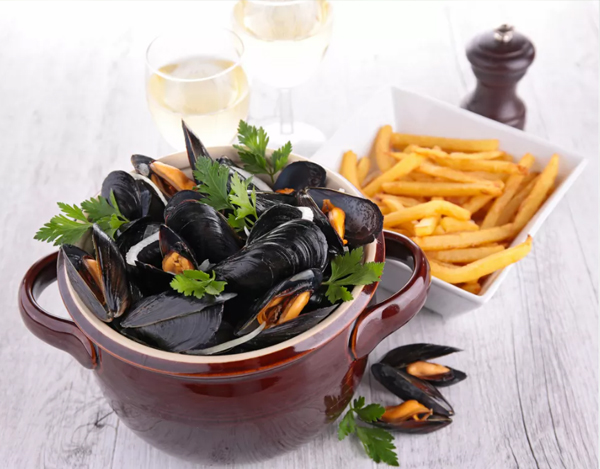
ムール・フリットは、ベルギーを代表する伝統的な料理の一つです。ムール貝（ムール）を白ワインや香味野菜で蒸し煮にして、
フライドポテト（フリット）と一緒にいただきます。シンプルですが風味豊かで、
ベルギーの海の幸とフライドポテト文化の融合を感じられる一品です。
ムール・フリットの歴史
ムール・フリットは18世紀頃からベルギーで親しまれている料理です。特にベルギー北部や海沿いの地域で多く食べられており、
漁師たちが収穫したムール貝を簡単に調理して食べたのが始まりと言われています。
その後、ベルギー名物のフリット（フライドポテト）と組み合わせて提供されるようになり、
今ではレストランや家庭でも定番のメニューとなっています。
ベルギーのフライドポテトの歴史
ベルギーのフリットは、世界的にも有名な料理です。17世紀のベルギー（当時はスペイン領の南ネーデルラント）では、魚が捕れない冬の時期に、
細く切ったジャガイモを油で揚げて魚の代わりとして食べたことが始まりとされています。
ベルギーでは、フライドポテトは単なるサイドメニューではなく、**フリットスタンド（フリッカン）**と呼ばれる専門店が国中にあり、
さまざまなソースと一緒に楽しむ文化があります。フリットはベルギーの国民食とも言える存在で、誇り高い食文化の一部です。
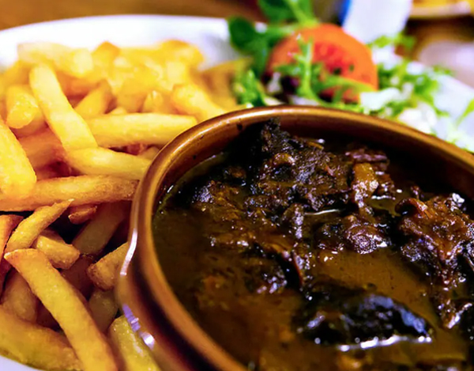
カルボナード・フラマンドは、ベルギーの伝統的な郷土料理で、特にフランドル地方（ベルギー北部）で親しまれています。牛肉を玉ねぎと一緒に炒め、ダークビール（通常はベルギービール）でじっくり煮込んだ料理です。
仕上げにマスタードを塗ったパンやジンジャーブレッドを加えることで、コクとほんのりとした甘みがプラスされます。
カルボナード・フラマンドの歴史
この料理は中世から伝わるもので、当時はワインよりもビールが手に入りやすかったベルギーでは、ビールを使った煮込み料理が多く作られていました。
カルボナード・フラマンドは、寒い気候の中で栄養のある温かい料理として発展し、家庭料理としても、またビストロやレストランでも定番のメニューとなっています。
現在でも、ベルギービールと一緒に味わう伝統料理として国内外の観光客にも人気があります。
▲ MENUへ戻る
おやつ
これから紹介するお菓子もベルギーの名物です。
このサイトで紹介しているすべての料理は、私がベルギーで実際に時々またはよく食べていたものです。
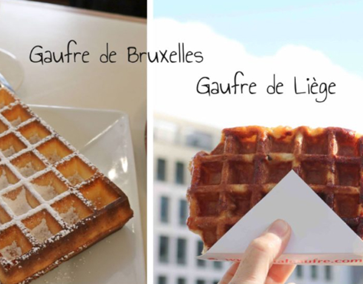
ワッフル（ゴーフル）はベルギーを代表するスイーツであり、国内にはいくつかの種類があります。その中でも特に有名なのが、ブリュッセルワッフルとリエージュワッフルです。
ブリュッセルワッフル
ブリュッセルワッフルは、四角い形をした軽くてサクサクとした食感のワッフルです。19世紀にはすでにベルギーの首都ブリュッセルで人気のあるスイーツとして広まりました。
このワッフルが世界的に有名になったのは、1960年のブリュッセル万博と、1964年のニューヨーク万博で紹介されたことがきっかけです。そこで「ベルギーワッフル（Belgian waffle）」という名前でアメリカでも知られるようになり、世界中に広まりました。
通常は粉砂糖、ホイップクリーム、チョコレートソースやフルーツをトッピングして食べます。
リエージュワッフル
リエージュワッフルは、ベルギー東部の都市リエージュが発祥とされており、18世紀ごろに貴族のために作られたお菓子が起源と言われています。
丸くて少し不規則な形をしており、生地はブリオッシュに近く、パールシュガー（大粒の砂糖）が練り込まれているのが特徴です。この砂糖が焼いている間に溶けてキャラメル状になり、カリッとした食感と甘さが生まれます。
リエージュワッフルはそのままで十分美味しく、ベルギーでは屋台や駅前などでも気軽に食べられる定番スイーツとなっています。
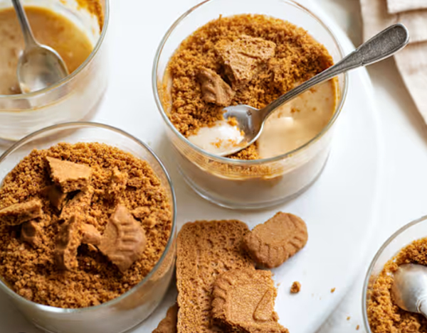
スペキュロス（Speculoos）は、ベルギーの伝統的なビスケットで、特にサン・ニコラ（聖ニコラウス）の日である12月6日前後に食べられることが多いお菓子です。
このビスケットの起源は中世にさかのぼり、当時は木型を使って聖ニコラや動物などの模様を刻んだビスケットが作られていました。名前の由来にはいくつか説がありますが、「speculator（見張る人）」＝聖ニコラの別名に由来すると言われています。
ベルギーでは、スペキュロスは特にフランドル地方で発展し、シナモン、ナツメグ、クローブなどの香辛料を使った、香ばしくて甘い味が特徴です。ただし、現在のベルギー版スペキュロスは、オランダの「スペキュラース」と比べてスパイスが控えめで、**ブラウンシュガー（特にカソナード）**によるキャラメルのような風味が強調されています。
また、**1932年に創業したベルギーの「ロータス社（Lotus Bakeries）」**がこのビスケットを商品化し、コーヒーに添えるお菓子として世界中に広めました。現在では「ロータスビスケット」としても知られ、ベルギーの食文化の象徴となっています。
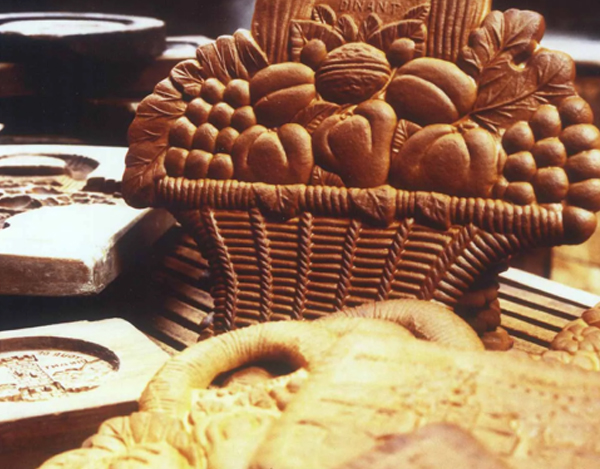
クック・ド・ディナン（Couque de Dinant）は、ベルギー南部のディナンという町の伝統的なお菓子です。とても硬くて、長く保存できるのが特徴で、蜂蜜と小麦粉だけで作られています。保存料や砂糖は一切使われていません。
このお菓子の起源にはいくつかの説がありますが、最も有名なのは1466年の伝説です。この年、ディナンの町はブルゴーニュ公シャルル・ル・テメレールによって攻撃され、町の多くが破壊されました。食料が不足する中、地元の人々は残っていた小麦粉と蜂蜜だけで硬いビスケットを作り、飢えをしのいだと言われています。
クック・ド・ディナンは、その後も保存食や贈り物として親しまれ、現在では木型で花や動物、歴史的な模様をつけて焼かれることが多く、美しい装飾も魅力の一つです。
とても硬いため、直接かじるのではなく、小さく割ってゆっくり口の中で溶かすようにして食べるのが一般的です。また、観光客向けのお土産としても人気があります。
▲ MENUへ戻る
晩ごはん
この後に紹介する料理や付け合わせの中には、ベルギーの伝統料理もありますが、ベルギー以外の国が起源の料理で、私がベルギーで食べるのが好きだったものも含まれています。
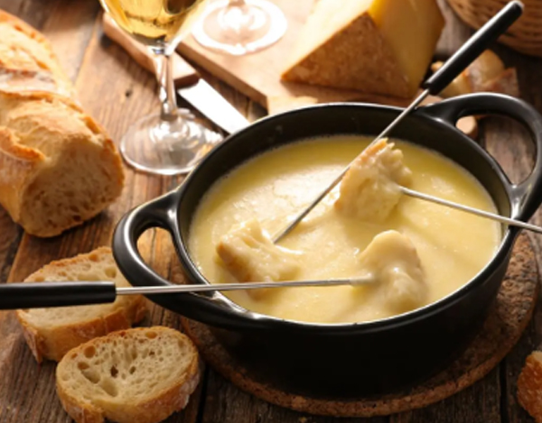
フォンデュ（チーズフォンデュ）の起源はスイスです。特にフランス語圏のスイス（ロマンド地方）で昔から親しまれてきた料理です。アルプス地方では、冬の寒い時期に保存していたチーズとパンを使って作られていたと言われています。
また、**フランス（特にサヴォワ地方）やイタリアの一部（ヴァッレ・ダオスタ州など）**でも似たようなスタイルのフォンデュが存在しています。
ベルギーでは、フォンデュは特別な日や冬の寒い季節に人気の料理です。たとえば：
- クリスマスや年末年始などの家族の集まり
- 友人とのホームパーティーやカジュアルな夕食会
- 寒い日のあたたかい食事として
- チーズ好きな人たちの間で、ワインと一緒に楽しむ食事としても人気です。
特に「チーズフォンデュ」や「ミートフォンデュ（肉を油で揚げるタイプ）」がよく食べられ、スイスやフランス由来と知りつつも、ベルギーの冬の定番料理のひとつとして多くの人に愛されています。
ブリュッセル・スプラウト（芽キャベツ）は、ベルギーの首都ブリュッセルにちなんで名付けられた野菜です。その名の通り、18世紀頃からベルギー、特にブリュッセル周辺で広く栽培されるようになりました。
実は芽キャベツの原型となる野菜は、古代ローマ時代から存在していたと考えられていますが、現在のような小さな球状の形になったのは、ベルギーでの栽培技術の発展によるものです。特に16世紀後半〜18世紀にかけて、ブリュッセル近郊の農家で改良された品種が「ブリュッセル・スプラウト」と呼ばれるようになりました。
この野菜は、茎に沿ってたくさんの小さな芽が並ぶ独特な形が特徴で、見た目がかわいらしく、栄養価も高いことで知られています。特にビタミンCや食物繊維が豊富で、健康的な冬野菜として人気があります。
現在では、ベルギーだけでなく、ヨーロッパ各国やアメリカ、日本などでも栽培され、世界中で食べられている野菜となっています。
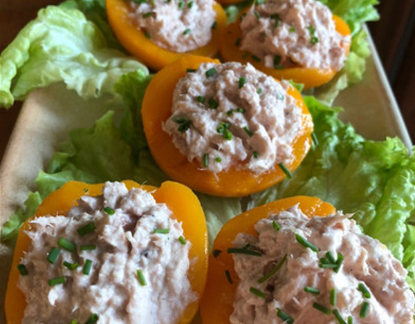
「pêches au thon（ペッシュ・オ・トン）」は、ベルギーでよく知られているユニークな冷製料理で、シロップ漬けの桃の中にツナサラダを詰めたものです。フルーツと魚の意外な組み合わせですが、甘じょっぱい味わいがクセになると、多くのベルギー人に親しまれています。
この料理が広まったのは、1950年代から60年代ごろの家庭料理ブームの時代だと考えられています。戦後のヨーロッパでは、缶詰食品（桃やツナなど）が手軽で便利な食材として人気となり、忙しい主婦たちの間で簡単に作れて見た目も華やかなオードブルとして評判になりました。
「ペッシュ・オ・トン」は、パーティー料理やおもてなしの前菜としてよく登場します。また、暑い夏にもぴったりな冷たい一品として、今でもベルギーの家庭やビュッフェで見かけることがあります。
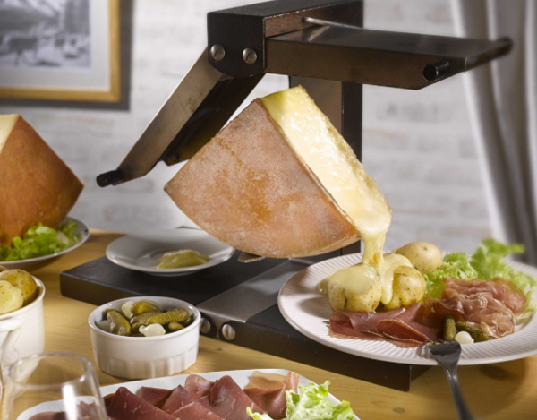
ラクレットはスイス発祥の伝統的なチーズ料理で、特にアルプス地方の**ヴァレー州（Valais）**が起源とされています。
「ラクレット（Raclette）」という名前は、フランス語の「racler（削る、こそげ取る）」に由来しており、溶けたチーズをパンやじゃがいもに削り落として食べるスタイルから名づけられました。
この料理の起源は、中世のアルプスの農民たちが冬の寒さの中、暖炉のそばでチーズを溶かして食べていた習慣にあるとされています。保存のきくチーズと、収穫したじゃがいもやパンを使って、栄養価が高く体を温める料理として親しまれてきました。
ベルギーではいつラクレットを食べるの？
ベルギーでもラクレットはとても人気があり、特に冬の時期に食べられる定番料理です。よく食べられる場面は：
- 寒い日の夕食
- クリスマスや年末年始などの家族の集まり
- チーズ好きな友人とのホームパーティー
- ラクレット用グリルを囲んでみんなで楽しむスタイル
ラクレットはじゃがいも、ハムやサラミ、ピクルスなどと一緒に食べられることが多く、準備も簡単でみんなで楽しめるため、ベルギーでも家庭料理として定着しています。
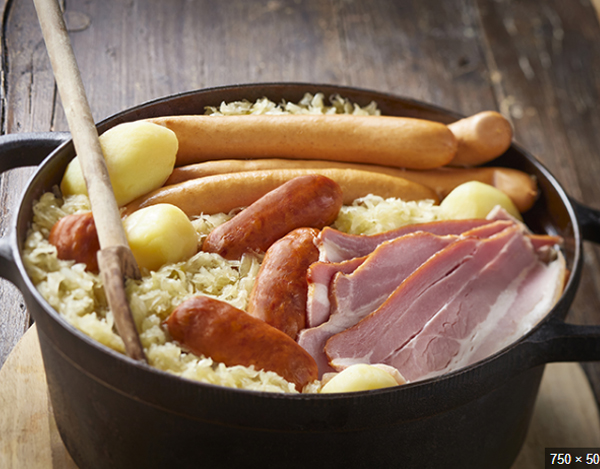
シュークルート（フランス語 : Choucroute）とは、キャベツの酢漬け（いわゆるザワークラウト）を使った、アルザス地方発祥の伝統的な料理です。塩漬けにしたキャベツを乳酸発酵させたものに、ソーセージやベーコン、じゃがいもなどを加えて煮込むのが一般的です。
この料理のルーツは古代中国とも言われていますが、現在のスタイルはドイツやフランスのアルザス地方で発展しました。アルザスはかつてドイツ領だった歴史もあり、ドイツ料理とフランス料理の影響が融合した地域です。
「choucroute」という名前はフランス語ですが、元はドイツ語の「Sauerkraut（ザワークラウト）」から来ています。
ベルギーではいつシュークルートを食べるの？
ベルギーでも、特にフランス語圏（ワロン地域）やドイツ語圏を中心に、シュークルートは冬の定番料理として人気があります。食べられる機会としては：
- 寒い季節の家庭料理として
- ビストロやレストランの冬のメニューとして
- クリスマス前後の家族の集まりやイベントの食卓にも登場します
また、ビールとの相性も良いため、ベルギーのビール文化ともよく合い、地元の食材を加えた**「ベルギー風シュークルート」**としてアレンジされることもあります。
▲ MENUへ戻る